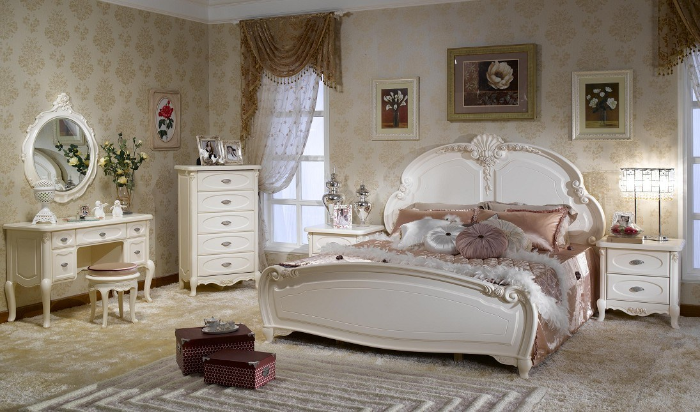
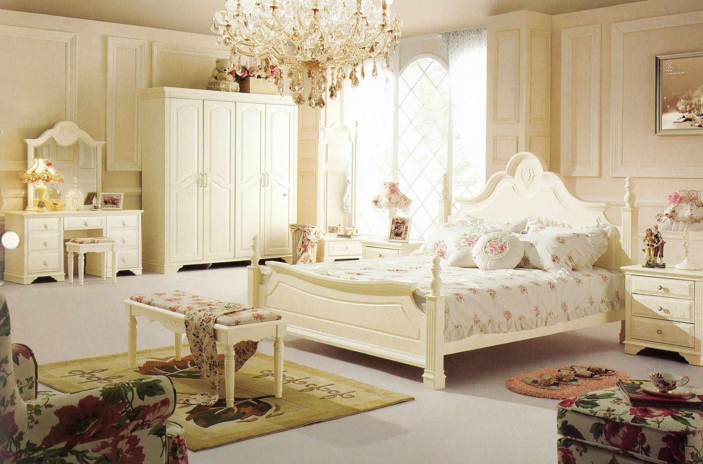
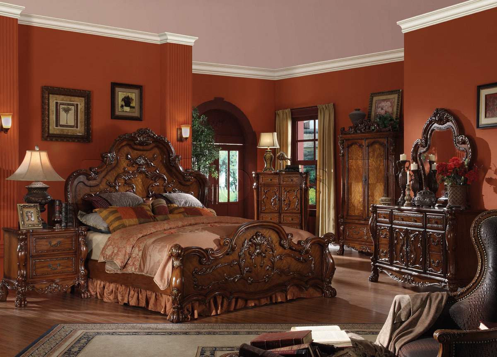

☰V I C T O R I A H A G A N | I N T E R I O R S
 (Logged in)
(Logged in)When designing your home, you can choose from a variety of sophisticated and elegant styles. And there’s no shortage of great looking bedroom interior design online. The one room where you have to invest special efforts in order to make it comfortable is the bedroom, as it is exactly there where you’re going to relax, and spend the most time needed to gather forces for your other activities. Therefore, decorate your bedroom with special care.
.Where can I find ideas to design my bed room?
How do I select a bedroom design?
How do I decorate my bedroom?
"Don't think about work in your bedroom or relaxation area."
-Matt Mullenweg
-Matt Mullenweg
What colours should I use in a bedroom?
How do I choose the perfect bedroom flooring?
How do I furnish a small bedroom?
What are some of the most popular bed room decorating ideas?


- 
- 
- 
Modern Style Bed Rooms:
If you’re after modern bedroom ideas then you might want to focus on tying a colour scheme together with pillows, throws and lampshades; blues, greys and shades of white will give a sleek, contemporary feel, while pops of brighter colours will give your room a modern punch. If you don’t go for a statement headboard for your bed, then look for a great piece of artwork, some shelving to create a stylish vignette or maybe a few frames to create a gallery wall, to go above the head of the bed. Some statement lighting pieces on the bedside tables can complete a look, too.Vintage Style Bed rooms:
A shabby chic bedroom is all about whites, creams, dusky pinks and greys. Pick out light and delicate floral patterns and try upcycling some old wooden furniture by painting it with chalk paint to give the slightly worn look. Adding fresh flowers, candles and a few light materials will complete the shabby chic look. If you want to stay away from whites and florals, vintage bedroom ideas could include a bit more colour, rustic elements and eclectic decoration. Again, if you can’t find real vintage pieces, look for vintage-inspired designs or transform an unloved item into something unique for your bedroom.Industrial Style Bed rooms:
Go for lots of wood and metal if you’re after an industrial bedroom look. Exposed brick is also often seen as the epitome of industrial, but if you can’t work that into your bedroom, then instead look for metal bed frames, desks and shelving, and lighting with exposed wiring. Add soft greys, whites and dark materials for a moody look, or stick to block colours if you want something brighter.Industrial-style bedrooms have an edgy, raw appeal that is undeniable when done right. Yet thanks to the inherent stripped-back look of the style, these bedrooms also seem perfect for the contemporary home that embraces a hint of semi-minimalism. From the humble and the vintage to the sleek and stylish, here is a look at the very bestScandinavian Style Bed rooms:
Scandinavian design is about natural materials, simple design, lots of white and tactile furnishings. If you want to add some colour and tone then pastels, greys and shades of black will work well. Try adding (fake) fur throws or rugs and linen bedsheets for a cosy feeling. Wooden floorboards are a big thumbs up when it comes to Scandi bedroom ideas.While dark rooms can help residents capture a few extra hours of rest, these dazzling Scandinavian-inspired rooms are sure to bring back that early morning vigor. Are you an aspiring early riser?The perfect mix between chic Scandinavian decor and industrial-inspired design.Eclectic Style Bed rooms:
Pretty much anything goes when it comes to eclectic bedroom ideas. Lots of colours, prints and decoration are allowed, so try experimenting with fun wall art, loud wallpaper or bright or patterned beddingMaster bedroom decoration can be too main stream if strict to a certain theme. Eclectic master bedroom decoration takes you out of the mold of a specific style and gives you the freedom to shape your master bedroom to suit your personality and needs. The chief dynamic of eclectic decoration is that all different elements must communicate with one another to not clash the master bedroom design..© Copyright 2017 by Interiart.